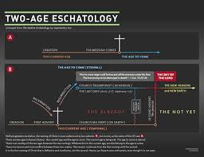
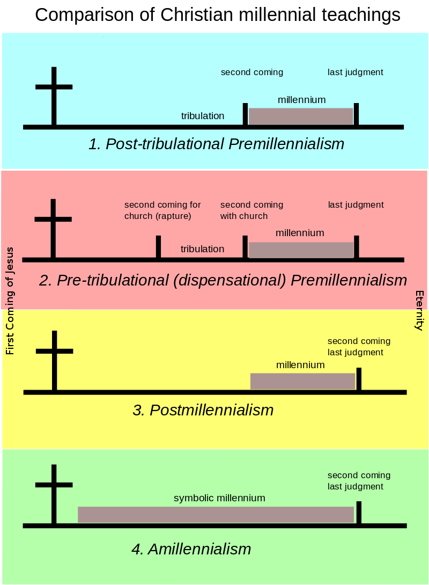
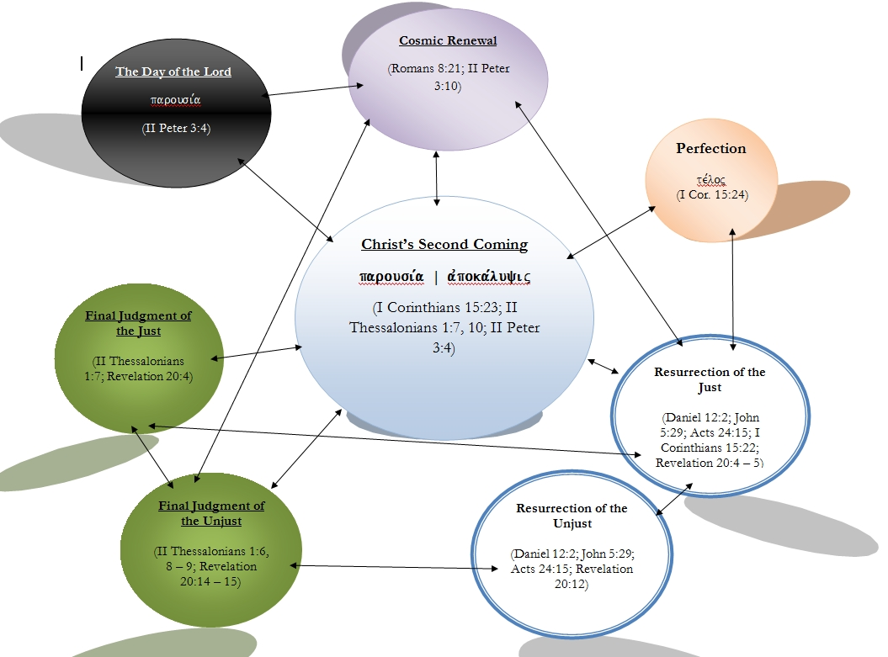
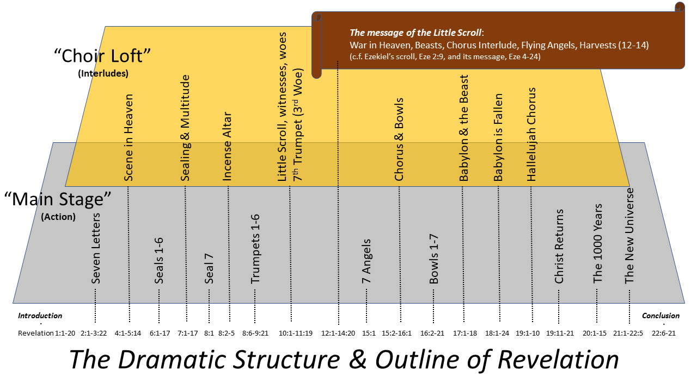

The Revelation of Jesus Christ
Chapter One
Prologue
Letters to the Seven Churches
Vision of the Son of Man
Chapter Two
Letter to the Church of Ephesus
Letter to the Church of Smyrna
Letter to the Church of Pergamum
Letter to the Church of Thyatira
Chapter Three
Letter to the Church of Sardis
Letter to the Church of Philadelphia
Letter to the Church of Laodicea
Chapter Four
Vision of the Throne of Heaven
Chapter Five
The Scroll with Seven Seals
Chapter Six
*In this chapter the Lamb breaks six of the seven seals*
1st seal: White horse and Rider holding a bow
2nd seal: Red horse and Rider holding a sword
3rd seal: Black horse and Rider holding scales
4th seal: Pale horse Rider is Death and Hell follows
5th seal: Martyrs Robed in White Cry "How Long?"
6th seal: Sun Darkened Blood Moon Stars Fall Wrath of the Lamb
Chapter Seven
144,000 of Israel are Sealed
Multitude from Every Nation, Tongue Gather Around the Throne
Chapter Eight
*In this chapter four of the trumpets are sounded*
Seventh Seal: Seven Angels are each given a trumpet
An Angel Mixes the Prayers of the Saints with Incense
1st Trumpet: Hail Fire Blood Fall from Heaven 1/3 of Earth burned
2nd Trumpet: Firey Mountain cast into Sea 1/3 of Sealife dies
3rd Trumpet: Star Falls Rivers and Streams Bitter like Wormwood
4th Trumpet: Sun Moon and Stars Struck 1/3 Earth is darkened
Eagle Flies Over with three woes
Chapter Nine
*In this chapter two more of the trumpets are sounded*
5th Trumpet: Star Falls Door of Bottomless Pit Opened Locusts Attack People Apollyon Oversees
6th Trumpet: Four Angels Unchained from the Euphrates Massive Army Follows
Chapter Ten
Angel with Small Scroll
John Eats the Scroll Tastes Sweet Bitter to Belly
Chapter Eleven
*In this chapter the seventh and final trumpet is sounded*
Measure the Temple Gentiles have Control for 3.5 Years
Two Witnesses Speak for God Untouchable
Beast from Bottomless Pit Kills Two Witnesses
After 3.5 Days Two Witnesses Revive and are Called to Heaven
7th Trumpet: Worship in Heaven
Chapter Twelve
Woman Delivering Child Dragon Waits to Destroy Son Born and Borne Away to Heaven
Battle in Heaven Dragon Thrown to Earth
Battle on Earth Dragon Fights with Woman's Other Children
Chapter Thirteen
Beast Arises from the Sea Ten Horns and Seven Heads
Beast Arises from the Land Promotes Worship of the First Beast Marks participants with 666
Chapter Fourteen
144000 Gather Around the Throne Sing and Worship the Lamb
Three Angels First Announces Good News Second Announces Babylon is Fallen Third Warns Against Worshippin the Beast
Son of Man Sitting on the Chouds With Sythe Harvests the Earth Another Sythe Appears Earth Harvested Again
Chapter Fifteen
Seven Angels Receive Seven Bowls With Seven Plauges
Chapter Sixteen
*In this chapter all seven bowls are poured out*
First Bowl: Poured Upon Earth Sores Upon People
Second Bowl: Poured Upon Sea Sea Life Dies
Third Bowl: Poured Upon Rivers and Streams Water Turns to Blood
Fouth Bowl: Poured Upon the Sun Heat Increases and Burns
Fifth Bowl: Poured Upon the Throne of the Beast Darkness Over the Earth
Six Bowl: Poured on the River Euphrates River Dries Three Frogs Army Marchs Armigedon
Seventh Bowl: Poured Into Air Earthquake, Hail, Fire from Heaven
Chapter Seventeen
The Great Prostitute Astride the Beast
Ultimately the Beast Kills the Prostitute
Chapter Eighteen
Babylon Falls
Kings Merchants Ship Builders Weep Over Babylon
Angel Throws a Millstone into the Sea
Chapter Nineteen
Three Hallelujahs in Heaven
Marriage of the Lamb
Christ Returns Riding a White Horse
The Beast and False Prophet are Cast into the Lake of Fire
Chapter Twenty
Satan bound for a Thousand Years
Satan Cast into the Lake of Fire
The Great White Throne of Judgment
Chapter Twenty-One
New Heaven and New Earth
New Jerusalem
Chapter Twenty-Two
River of Life Trees of Life
John Converses with the Angel
Final Warnings and Invitation Jesus is Coming
Click on the Image for Printable PDF Outline

Click on Links for Printable Charts of Revelation




See my other outlines
Gospel of Mark
Epistle to Titus
Epistle to James
Second Epistle of St Peter
Epistle of Jude
Epistle of Second Corinthians